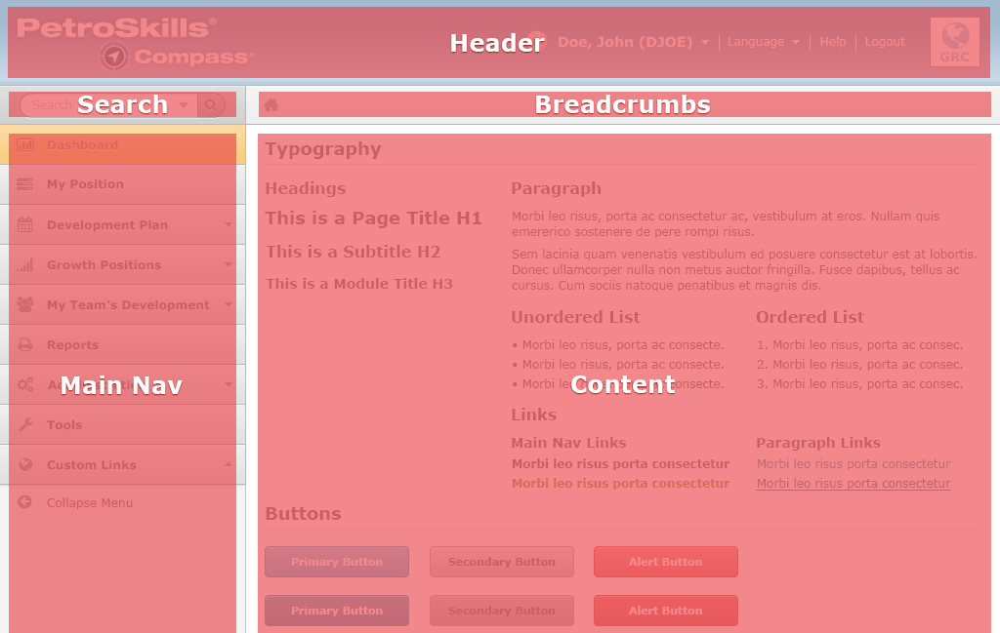

Grids
Create powerful multi-device layouts quickly and easily with the 12-column, nestable grid. The grid is built around two key elements: rows and columns. Rows create a max-width and contain the columns; columns create the actual structure. For layouts to work properly, always put your page content inside a row and a column.
What you need to know is that columns don't have a fixed width or any fixed pixels. Your columns will shrink in size, based on the resolution of the screen or the size of the windows. Also they are specified in simple percentages (e.g. 25%, 50%, etc.).
Technical Details
On the image shown above, the design was built on a 12-column grid and made to fit on a desktop browser. The width is specified at 100%. On each side of the entire width, there are 15px width space between the edge of the browser window and the first & last columns. Finally, there are 30px width space between the inner columns. The space between columns are known as column gutters.
Layout
The overall design is broken into five sections.
- The header is always located at the top. They usually consists of the PetroSkills product logo, Company logo (by user/client), and the admin links.
- Search is shown below the header but above the main navigation on the left side of the website. This area is used for searching through the entire website.
- Breadcrumbs is shown between the header and the main content area. Breadcrumbs is a visual indicator to help users know where they are in the interface.
- Main Navigation is shown below the search box on the left hand side.
- Main Content Area is shown on the right below the Breadcrumbs indicator.
Responsive
When building for mobile phones and tablets, the design will look different to match the device's native resolution, orientation, and the user experience of being "on-the-go".
Tablet
Smartphone